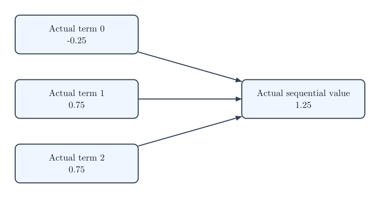
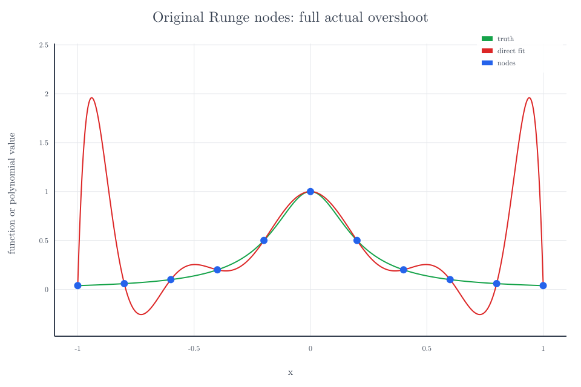
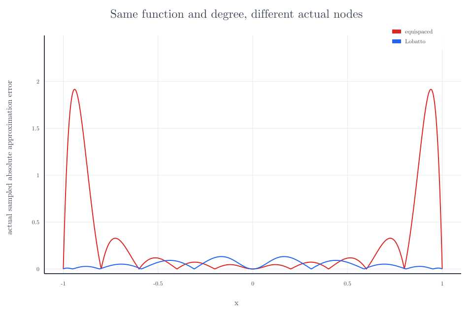
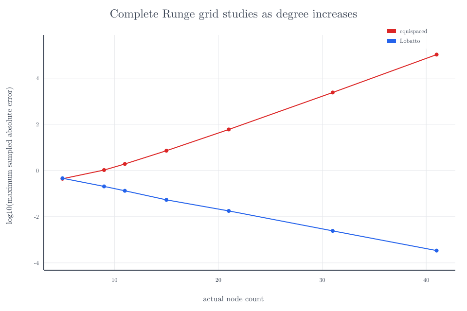

Lagrange interpolation through actual products
Abstract
Given values at distinct coordinates, interpolation constructs a polynomial that passes through them; passing through the nodes does not guarantee an accurate approximation between them. We inspect actual direct-product terms on a hand-checkable quadratic, retain the original eleven equispaced Runge nodes, and compare their sampled error with Chebyshev–Lobatto placement. The plots include the full observed overshoot and distinguish mathematical interpolation, approximation conditioning and finite-arithmetic evaluation limits.
The direct polynomial and its limits
For n distinct nodes, the Lagrange basis is
At a node x_i, L_j(x_i) is one if i=j and zero otherwise. Hence p interpolates the values. Uniqueness follows because the difference of two degree-at-most n−1 interpolants would have n distinct roots. This does not say p is close to a different underlying function between nodes. For sufficiently smooth f the exact-arithmetic remainder involves f’s nth derivative and the product of distances to all nodes, so node placement and function smoothness matter.
The native API evaluates this direct product in original j-then-k order and sequentially adds its terms. It is not a barycentric evaluator or coefficient solver. Complete shape/finite/distinct-node checks precede evaluation. Ordinary finite subtraction/division order is preserved; when a double subtraction overflows, both differences and their ratio are recomputed in long double, then the ratio rounded once. Every ratio, product and sum must still be finite double. A true finite polynomial value can therefore be rejected if a direct intermediate overflows; no general stability or error certificate is promised.
A quadratic you can check by hand
Use x=−1,0,1, y=x²+1 and query0.5. The basis weights are−0.125,0.75,0.375 and weighted terms−0.25,0.75,0.75, giving1.25. The following observations are actual producing products and sums, not a separate basis reconstruction.
#include <dm/dm.hpp>
int main() {
std::filesystem::create_directories("build");
const auto t = dm::algorithms::lagrange_trace({-1, 0, 1}, {2, 1, 2}, .5);
std::print("| actual term j | factor k | actual ratio | product before | product after |\n| ---: | ---: " "| ---: | ---: | ---: |\n");
for (const auto &e : t.factors)
std::print("| {} | {} | {:.9f} | {:.9f} | {:.9f} |\n", e.term_index,
e.excluded_node, e.ratio, e.term_before, e.term_after);
std::print("\n| actual node term | final contribution | sum before | sum after |\n| ---: | ---: | ---: " "| ---: |\n");
for (const auto &e : t.terms)
std::print("| {} | {:.9f} | {:.9f} | {:.9f} |\n", e.node, e.value,
e.sum_before, e.sum_after);
dm::graphics::Diagram d;
for (std::size_t j = 0; j < t.terms.size(); ++j)
d.node(std::to_string(j), {0, double(1 - int(j)) * 2},
std::format("Actual term {}\n{}", j, t.terms[j].value));
d.node("sum", {7, 0}, std::format("Actual sequential value\n{}", t.value));
for (int j = 0; j < 3; ++j)
d.edge(std::to_string(j), "sum");
d.save_svg("build/lagrange_terms.svg");
}| actual term j | factor k | actual ratio | product before | product after |
|---|---|---|---|---|
| 0 | 1 | -0.500000000 | 2.000000000 | -1.000000000 |
| 0 | 2 | 0.250000000 | -1.000000000 | -0.250000000 |
| 1 | 0 | 1.500000000 | 1.000000000 | 1.500000000 |
| 1 | 2 | 0.500000000 | 1.500000000 | 0.750000000 |
| 2 | 0 | 0.750000000 | 2.000000000 | 1.500000000 |
| 2 | 1 | 0.500000000 | 1.500000000 | 0.750000000 |
| actual node term | final contribution | sum before | sum after |
|---|---|---|---|
| 0 | -0.250000000 | 0.000000000 | -0.250000000 |
| 1 | 0.750000000 | -0.250000000 | 0.500000000 |
| 2 | 0.750000000 | 0.500000000 | 1.250000000 |

Original eleven-node Runge example without clipping
Retain f(x)=1/(1+25x²) and the original eleven equally spaced nodes on[−1,1]. The original plot’s fixed upper limit1.3 clipped substantial actual overshoot; this replacement derives limits from the full computed curves. Evaluate a deterministic2001-point grid including both endpoints, replacing an accumulating floating increment loop that could drift past an endpoint. The reported maximum is over that finite grid, not a certified continuous supremum.
#include <dm/dm.hpp>
int main() {
std::filesystem::create_directories("build");
auto f = [](double x) { return 1 / (1 + 25 * x * x); };
std::vector<double> nodes, values;
for (int i = 0; i < 11; ++i) {
const double x = -1. + 2. * i / 10;
nodes.push_back(x);
values.push_back(f(x));
}
double node_error = 0, max_error = 0, at = 0, lo = 0, hi = 1;
std::vector<double> x, truth, fit;
for (std::size_t i = 0; i < nodes.size(); ++i)
node_error =
std::max(node_error,
std::abs(dm::algorithms::lagrange_interpolate(nodes,
values,
nodes[i]) -
values[i]));
for (int i = 0; i <= 2000; ++i) {
const double q =
-1. + 2. * i / 2000, v =
dm::algorithms::lagrange_interpolate(nodes, values, q), e =
std::abs(v - f(q));
x.push_back(q);
truth.push_back(f(q));
fit.push_back(v);
lo = std::min(lo, v);
hi = std::max(hi, v);
if (e > max_error) {
max_error = e;
at = q;
}
}
std::print("| original nodes | actual grid evaluations | maximum node residual | maximum sampled " "approximation error | actual grid coordinate of first maximum | observed curve minimum | " "observed curve maximum |\n| ---: | ---: | ---: | ---: | ---: | ---: | ---: |\n| {} | {} | " "{:.12e} | {:.12e} | {:.9f} | {:.9f} | {:.9f} |\n",
nodes.size(), x.size(), node_error, max_error, at, lo, hi);
const double span = hi - lo;
auto p = dm::graphics::RPlot::create();
p.line(x, truth, "truth", {22, 163, 74}, 2).line(x, fit, "direct fit",
{220, 38, 38}, 2).points(
nodes, values, "nodes", {37, 99, 235}, 6).y_limits(lo - .1 * span,
hi + .25 * span).title("Original Runge nodes: full actual overshoot").x_label("x").y_label("function or polynomial value").save_svg("build/lagrange_original.svg");
}| original nodes | actual grid evaluations | maximum node residual | maximum sampled approximation error | actual grid coordinate of first maximum | observed curve minimum | observed curve maximum |
|---|---|---|---|---|---|---|
| 11 | 2001 | 0.000000000000e+00 | 1.915643050219e+00 | 0.940000000 | -0.257177794 | 1.958951842 |

Node placement changes the approximation problem
Compare eleven Chebyshev–Lobatto nodes cos(pi*i/10) with the original eleven equispaced nodes, using the same function and2001 evaluation positions. Endpoints are retained in both sets. The plotted absolute errors are actual native evaluations, not a general claim that one grid dominates for every function. Changing node placement changes the interpolating polynomial; changing to a barycentric evaluation formula would instead evaluate the same polynomial more efficiently/stably.
#include <dm/dm.hpp>
int main() {
std::filesystem::create_directories("build");
auto f = [](double x) { return 1 / (1 + 25 * x * x); };
std::vector<double> a, b, ya, yb;
for (int i = 0; i < 11; ++i) {
a.push_back(-1. + 2. * i / 10);
b.push_back(std::cos(std::numbers::pi * i / 10.));
ya.push_back(f(a.back()));
yb.push_back(f(b.back()));
}
std::vector<double> x, ea, eb;
double ma = 0, mb = 0;
for (int i = 0; i <= 2000; ++i) {
double q = -1. + 2. * i / 2000;
x.push_back(q);
ea.push_back(std::abs(dm::algorithms::lagrange_interpolate(a, ya, q) -
f(q)));
eb.push_back(std::abs(dm::algorithms::lagrange_interpolate(b, yb, q) -
f(q)));
ma = std::max(ma, ea.back());
mb = std::max(mb, eb.back());
}
std::print("| actual node placement | nodes | grid size | maximum sampled absolute error |\n| --- | " "---: | ---: | ---: |\n| equispaced | 11 | {} | {:.12e} |\n| Chebyshev-Lobatto | 11 | {} | " "{:.12e} |\n",
x.size(), ma, x.size(), mb);
auto p = dm::graphics::RPlot::create();
p.line(x, ea, "equispaced", {220, 38, 38}, 2).line(x, eb, "Lobatto",
{37, 99, 235}, 2).y_limits(-.05, ma * 1.3).title("Same function and degree, different actual nodes").x_label("x").y_label("actual sampled absolute approximation error").save_svg("build/lagrange_nodes.svg");
}| actual node placement | nodes | grid size | maximum sampled absolute error |
|---|---|---|---|
| equispaced | 11 | 2001 | 1.915643050219e+00 |
| Chebyshev-Lobatto | 11 | 2001 | 1.321964324367e-01 |

Sampled error versus increasing degree
More equally spaced nodes need not improve the approximation to Runge’s function. Run complete native evaluations at every grid position for each listed node count and both placements. Positive measured maximum errors are plotted logarithmically without replacing zero by an arbitrary floor. This is a finite study, not a continuous supremum bound or an asymptotic proof. The direct producer performs n(n−1) ratios/multiplications and n final term additions per evaluation, excluding validation and copying. Duplicate checks also cost O(n²); no precomputed barycentric weights are used.
#include <dm/dm.hpp>
int main() {
std::filesystem::create_directories("build");
auto f = [](double x) { return 1 / (1 + 25 * x * x); };
std::vector<double> x, e, c;
std::print("| actual nodes | actual evaluation grid | equispaced maximum sampled error | Lobatto " "maximum sampled error | actual ratios per evaluation |\n| ---: | ---: | ---: | ---: | ---: " "|\n");
for (int n : {5, 9, 11, 15, 21, 31, 41}) {
double errors[2]{};
std::size_t ratios = 0;
for (int kind = 0; kind < 2; ++kind) {
std::vector<double> nodes, values;
for (int i = 0; i < n; ++i) {
double q =
kind ? std::cos(std::numbers::pi * i / double(n - 1))
: -1. + 2. * i / (n - 1);
nodes.push_back(q);
values.push_back(f(q));
}
for (int i = 0; i <= 2000; ++i) {
double q = -1. + 2. * i / 2000;
const auto a =
dm::algorithms::lagrange_analyze(nodes, values, q);
errors[kind] = std::max(errors[kind], std::abs(a.value - f(q)));
ratios = a.work.ratio_evaluations;
}
}
std::print("| {} | 2001 | {:.12e} | {:.12e} | {} |\n", n, errors[0],
errors[1], ratios);
if (errors[0] <= 0 || errors[1] <= 0)
throw std::runtime_error("zero error requires separate display");
x.push_back(n);
e.push_back(std::log10(errors[0]));
c.push_back(std::log10(errors[1]));
}
auto p = dm::graphics::RPlot::create();
p.line(x, e, "equispaced", {220, 38, 38}, 2).points(x, e, "", {220, 38, 38},
4).line(x, c, "Lobatto",
{37, 99, 235}, 2).points(x, c, "", {37, 99, 235}, 4).title("Complete Runge grid studies as degree increases").x_label("actual node count").y_label("log10(maximum sampled absolute error)").save_svg("build/lagrange_degree.svg");
}| actual nodes | actual evaluation grid | equispaced maximum sampled error | Lobatto maximum sampled error | actual ratios per evaluation |
|---|---|---|---|---|
| 5 | 2001 | 4.383566395256e-01 | 4.599805184135e-01 | 20 |
| 9 | 2001 | 1.045173911784e+00 | 2.046817048266e-01 | 72 |
| 11 | 2001 | 1.915643050219e+00 | 1.321964324367e-01 | 110 |
| 15 | 2001 | 7.194881107233e+00 | 5.350803943024e-02 | 210 |
| 21 | 2001 | 5.982230871073e+01 | 1.773723617054e-02 | 420 |
| 31 | 2001 | 2.387997736297e+03 | 2.425766515361e-03 | 930 |
| 41 | 2001 | 1.046387174088e+05 | 3.398774998944e-04 | 1640 |

Scope and verification
Finite query/data, matched shapes and pairwise distinct coordinates are checked completely before evaluation or capture. Empty input retains the historical zero convention. The trace owns original x/y values, every actual factor product and every term/sum boundary; no interpolation replay constructs records. The complete n*n+2*n count is admitted before copies/history allocation with a million-entry default and zero disabling only the optional quota. Counts exclude scalar fields, capacities and bytes/RAM. Conservative finite-intermediate rejection is distinct from an approximation or conditioning guarantee.
Independent Fraction references checked100 direct evaluations,2724 actual factor
records and546 term/sum records. All28014 evaluations in the14 complete Runge
grids were compared with an independent80-digit Decimal barycentric evaluation
of the same represented nodes/values. The largest observed absolute discrepancy
was about1.29e-6 on the high-degree ill-conditioned controls; relative to the
absolute weighted-term scale, the largest discrepancy was about1.03e-15. These
are observations, not certified rounding bounds. Another5000 ordinary
evaluations matched the frozen direct arithmetic exactly. Native controls verify
the full original overshoot, polynomial reproduction, extrapolation, complete
guards/quotas and ownership. The ten-report shared build passed141 native CTest
cases,45 directly instrumented address/undefined-behaviour sanitizer cases,90
compiled/executed public examples,412/412 scoped file definitions plus11/11
changed lagged-Fibonacci engine definitions, and ten representative clangd
hovers. All four complete report programs executed and all four native figures
were visually reviewed. Receipts and repeatable checks are retained under
build/mepml-conversion/batch-184-193/.
References
J.-P. Berrut and L. N. Trefethen(2004), Barycentric Lagrange Interpolation, SIAM Review46(3),501–517. The paper explains interpolation forms and node conditioning; this report explicitly uses the native direct-product evaluator rather than attributing barycentric properties to it.